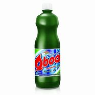

R$ 200
A água sanitária é composta por hipoclorito de sódio, um tipo de sal com grande poder oxidante. Isso quer dizer que ele é corrosivo, portanto, é extremamente importante usá-lo com cautela. É por esse motivo também que encontramos o item comercializado em baixa concentração. Por exemplo, a água sanitária vendida para limpeza geralmente contém entre 2% e 2,5% de hipoclorito de sódio. A água sanitária serve para a limpeza profunda, sendo capaz de eliminar germes, bactérias e vírus das superfícies. Além disso, também pode ser utilizada para desinfeção de alimentos.